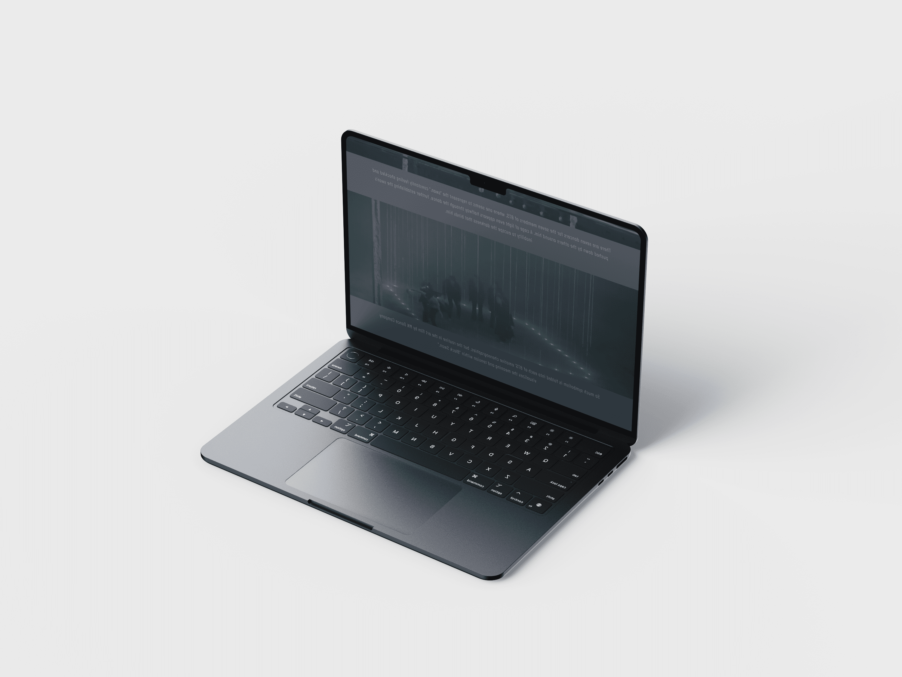
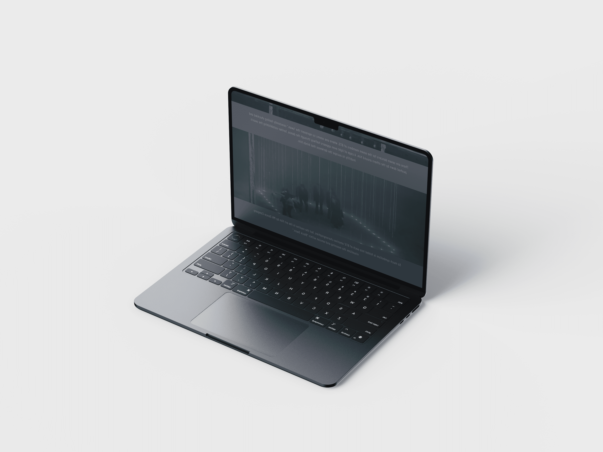

Black Swan
Que tal saber mais sobre esse projeto enquanto escuta sobre a música que o inspirou?
Fazer um projeto com o tema Black Swan foi uma ideia que surgiu após ler mais sobre o significado da música e conhecer melhor os componentes artísticos utilizados para a produção do vídeo clipe. Todo esse contato funcionou como fonte de inspiração para que eu ousasse trabalhar em algo diferente e com mais detalhes.
Encontrar as imagens certas para compor o design foi um dos maiores desafios, visto que não achava nada que se
encaixasse exatamente no escopo que havia criado na minha cabeça. Por isso, a resposta foi tornar uma simples
imagem, a peça perfeita para cada seção da landing page.
Queria que elas se “fundissem” ao fundo, como um degradê,
e foi exatamente isso que fiz para que essa aparência
se tornasse real. Ao adicionar camadas acima da imagem original e trabalhar com o gradiente de cores certas foi
possível ir moldando a foto para que atingisse meu objetivo e ficasse imperceptível junto com o todo.
Mas muito além de fazer algo bonito, eu queria que todos percebessem os detalhes e entendessem que a arte não é
só o que veem. Por isso que houve um estudo por trás, em que decidi implementar as coisas que mais me chamaram a
atenção para que atiçassem a curiosidade dos que leem e os instigassem a pesquisar mais sobre o assunto.
Para construir a identidade visual, não fugi muito das cores predominantes para que tudo se tornasse harmônico.
“É como ser transportado para um universo onde música e dança se entrelaçam em perfeita harmonia, revelando a verdadeira alma da arte”
 
